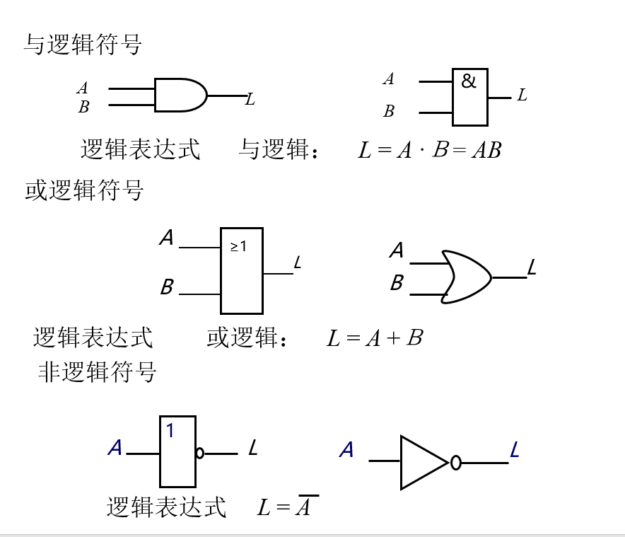

ppt上的概念怎么回事，基本运算的逻辑符号 与逻辑表达式认识就够了
数字逻辑
数字集成电路的分类
- 根据结构特点和输入信号的响应规则的不同
- 组合逻辑电路与时序逻辑电路
- 器件不同
- TTL和CMOS电路
数字集成电路的特点
-
电路简单，便于大规模集成，批量生产
-
可靠性、稳定性和精度高，抗干扰能力强
-
体积小、通用性高、成本低
-
可编程性
-
高速度、低功耗
-
加密性好
-
模拟信号：时间、数值连续变化
-
数字信号：时间、数值均离散
-
由于数字信号便于储存分析传输，通常将模拟信号通过模数转换器转换为数字信号
数字信号的描述方式
二值数字逻辑与逻辑电平
二值数字逻辑：0、1编码
表示方式：用高电平表示1，低电平表示0
数字波形：信号逻辑电平对时间的图形表示
- 非归零型
- 归零型(1个时间拍内归零)
比特率：每秒钟传输数据的位数
周期：两个相邻脉冲之间的时间间隔
脉冲宽度($t_W$): 脉冲幅值的50%的两个时间所跨越的时间
占空比：脉冲宽度占整个周期的百分比
上升时间和下降时间：从脉冲幅值的$10%$到$90%$上升下降的时间(ns)
二进制
进位规律：逢二进一
优点：
- 易于电路表达
- 所用元件少，电路简单可靠
- 运算规则简单
传输：
- 串行传输
- 并行传输：将一组二进制的所有位同时发送
二值逻辑变量和基本逻辑运算
逻辑运算：二进制数码按照某种特定的因果关系进行运算，使用的数学工具是逻辑代数
逻辑代数中，有与、或、非三种基本运算
